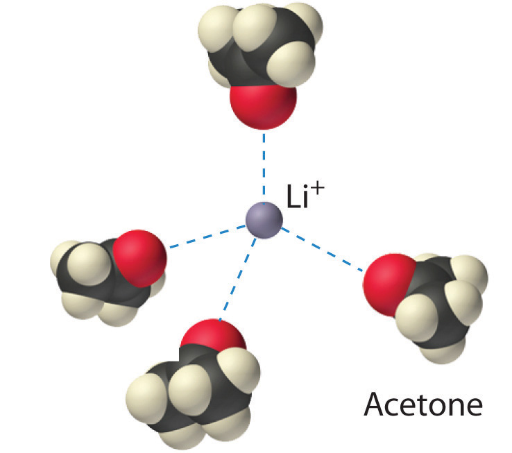
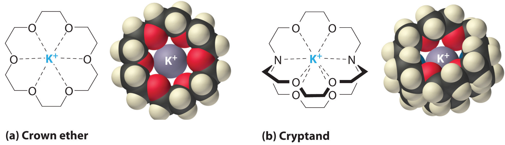

When a solute dissolves, its individual atoms, molecules, or ions interact with the solvent, become solvated, and are able to diffuse independently throughout the solution (part (a) in Figure 13.4 "Dissolution and Precipitation"). This is not, however, a unidirectional process. If the molecule or ion happens to collide with the surface of a particle of the undissolved solute, it may adhere to the particle in a process called crystallization. Dissolution and crystallization continue as long as excess solid is present, resulting in a dynamic equilibrium analogous to the equilibrium that maintains the vapor pressure of a liquid. (For more information about vapor pressure, see Chapter 11 "Liquids", Section 11.3 "Unique Properties of Liquids".) We can represent these opposing processes as follows:
Equation 13.4
Although the terms precipitation and crystallization are both used to describe the separation of solid solute from a solution, crystallization refers to the formation of a solid with a well-defined crystalline structure, whereas precipitation refers to the formation of any solid phase, often one with very small particles.
Figure 13.4 Dissolution and Precipitation

(a) When a solid is added to a solvent in which it is soluble, solute particles leave the surface of the solid and become solvated by the solvent, initially forming an unsaturated solution. (b) When the maximum possible amount of solute has dissolved, the solution becomes saturated. If excess solute is present, the rate at which solute particles leave the surface of the solid equals the rate at which they return to the surface of the solid. (c) A supersaturated solution can usually be formed from a saturated solution by filtering off the excess solute and lowering the temperature. (d) When a seed crystal of the solute is added to a supersaturated solution, solute particles leave the solution and form a crystalline precipitate.
The maximum amount of a solute that can dissolve in a solvent at a specified temperature and pressure is its solubilityA measure of the how much of a solid substance remains dissolved in a given amount of a specified liquid at a specified temperature and pressure.. Solubility is often expressed as the mass of solute per volume (g/L) or mass of solute per mass of solvent (g/g), or as the moles of solute per volume (mol/L). Even for very soluble substances, however, there is usually a limit to how much solute can dissolve in a given quantity of solvent. In general, the solubility of a substance depends on not only the energetic factors we have discussed but also the temperature and, for gases, the pressure. At 20°C, for example, 177 g of NaI, 91.2 g of NaBr, 35.9 g of NaCl, and only 4.1 g of NaF dissolve in 100 g of water. At 70°C, however, the solubilities increase to 295 g of NaI, 119 g of NaBr, 37.5 g of NaCl, and 4.8 g of NaF. As you learned in Chapter 12 "Solids", the lattice energies of the sodium halides increase from NaI to NaF. The fact that the solubilities decrease as the lattice energy increases suggests that the ΔH2 term in Figure 13.1 "Enthalpy Changes That Accompany the Formation of a Solution" dominates for this series of compounds.
A solution with the maximum possible amount of solute is saturatedA solution with the maximum possible amount of a solute under a given set of conditions.. If a solution contains less than the maximum amount of solute, it is unsaturated. When a solution is saturated and excess solute is present, the rate of dissolution is exactly equal to the rate of crystallization (part (b) in Figure 13.4 "Dissolution and Precipitation"). Using the value just stated, a saturated aqueous solution of NaCl, for example, contains 35.9 g of NaCl per 100 mL of water at 20°C. We can prepare a homogeneous saturated solution by adding excess solute (in this case, greater than 35.9 g of NaCl) to the solvent (water), stirring until the maximum possible amount of solute has dissolved, and then removing undissolved solute by filtration.
The solubility of most solids increases with increasing temperature.
Because the solubility of most solids increases with increasing temperature, a saturated solution that was prepared at a higher temperature usually contains more dissolved solute than it would contain at a lower temperature. When the solution is cooled, it can therefore become supersaturatedAn unstable solution with more dissolved solute than it would normally contain under the given set of conditions. (part (c) in Figure 13.4 "Dissolution and Precipitation"). Like a supercooled or superheated liquid (see Chapter 11 "Liquids"), a supersaturated solution is unstable. Consequently, adding a small particle of the solute, a seed crystalA solid sample of a substance that can be added to a supercooled liquid or a supersaturated solution to help induce crystallization., will usually cause the excess solute to rapidly precipitate or crystallize, sometimes with spectacular results, as was shown in Figure 1.9 "The Crystallization of Sodium Acetate from a Concentrated Solution of Sodium Acetate in Water". The rate of crystallization in Equation 13.4 is greater than the rate of dissolution, so crystals or a precipitate form (part (d) in Figure 13.4 "Dissolution and Precipitation"). In contrast, adding a seed crystal to a saturated solution reestablishes the dynamic equilibrium, and the net quantity of dissolved solute no longer changes.
Because crystallization is the reverse of dissolution, a substance that requires an input of heat to form a solution (ΔHsoln > 0) releases that heat when it crystallizes from solution (ΔHcrys < 0). The amount of heat released is proportional to the amount of solute that exceeds its solubility. Two substances that have a positive enthalpy of solution are sodium thiosulfate (Na2S2O3) and sodium acetate (CH3CO2Na), both of which are used in commercial hot packs, small bags of supersaturated solutions used to warm hands (see Figure 5.13 "The High Specific Heat of Liquid Water Has Major Effects on Climate").
The interactions that determine the solubility of a substance in a liquid depend largely on the chemical nature of the solute (such as whether it is ionic or molecular) rather than on its physical state (solid, liquid, or gas). We will first describe the general case of forming a solution of a molecular species in a liquid solvent and then describe the formation of a solution of an ionic compound.
The London dispersion forces, dipole–dipole interactions, and hydrogen bonds that hold molecules to other molecules are generally weak. Even so, energy is required to disrupt these interactions. As we described in Section 13.1 "Factors Affecting Solution Formation", unless some of that energy is recovered in the formation of new, favorable solute–solvent interactions, the increase in entropy on solution formation is not enough for a solution to form.
For solutions of gases in liquids, we can safely ignore the energy required to separate the solute molecules (ΔH2 = 0) because the molecules are already separated. Thus we need to consider only the energy required to separate the solvent molecules (ΔH1) and the energy released by new solute–solvent interactions (ΔH3). Nonpolar gases such as N2, O2, and Ar have no dipole moment and cannot engage in dipole–dipole interactions or hydrogen bonding. Consequently, the only way they can interact with a solvent is by means of London dispersion forces, which may be weaker than the solvent–solvent interactions in a polar solvent. It is not surprising, then, that nonpolar gases are most soluble in nonpolar solvents. In this case, ΔH1 and ΔH3 are both small and of similar magnitude. In contrast, for a solution of a nonpolar gas in a polar solvent, ΔH1 is far greater than ΔH3. As a result, nonpolar gases are less soluble in polar solvents than in nonpolar solvents. For example, the concentration of N2 in a saturated solution of N2 in water, a polar solvent, is only 7.07 × 10−4 M compared with 4.5 × 10−3 M for a saturated solution of N2 in benzene, a nonpolar solvent.
The solubilities of nonpolar gases in water generally increase as the molecular mass of the gas increases, as shown in Table 13.3 "Solubilities of Selected Gases in Water at 20°C and 1 atm Pressure". This is precisely the trend expected: as the gas molecules become larger, the strength of the solvent–solute interactions due to London dispersion forces increases, approaching the strength of the solvent–solvent interactions.
Table 13.3 Solubilities of Selected Gases in Water at 20°C and 1 atm Pressure
| Gas | Solubility (M) × 10−4 |
|---|---|
| He | 3.90 |
| Ne | 4.65 |
| Ar | 15.2 |
| Kr | 27.9 |
| Xe | 50.2 |
| H2 | 8.06 |
| N2 | 7.07 |
| CO | 10.6 |
| O2 | 13.9 |
| N2O | 281 |
| CH4 | 15.5 |
Virtually all common organic liquids, whether polar or not, are miscible. The strengths of the intermolecular attractions are comparable; thus the enthalpy of solution is expected to be small (ΔHsoln ≈ 0), and the increase in entropy drives the formation of a solution. If the predominant intermolecular interactions in two liquids are very different from one another, however, they may be immiscible. For example, organic liquids such as benzene, hexane, CCl4, and CS2 (S=C=S) are nonpolar and have no ability to act as hydrogen bond donors or acceptors with hydrogen-bonding solvents such as H2O, HF, and NH3; hence they are immiscible in these solvents. When shaken with water, they form separate phases or layers separated by an interface (Figure 13.5 "Immiscible Liquids"), the region between the two layers. Just because two liquids are immiscible, however, does not mean that they are completely insoluble in each other. For example, 188 mg of benzene dissolves in 100 mL of water at 23.5°C. Adding more benzene results in the separation of an upper layer consisting of benzene with a small amount of dissolved water (the solubility of water in benzene is only 178 mg/100 mL of benzene).
Figure 13.5 Immiscible Liquids

Water is immiscible with both CCl4 and hexane. When all three liquids are mixed, they separate into three distinct layers. Because water is less dense than CCl4, the water layer floats on the CCl4. In contrast, hexane is less dense than water, so the hexane floats on the water layer. Because I2 is intensely purple and quite soluble in both CCl4 and hexane, but insoluble in water, a small amount of I2 has been added to help identify the hexane and CCl4 layers.
The solubilities of simple alcohols in water are given in Table 13.4 "Solubilities of Straight-Chain Organic Alcohols in Water at 20°C". Only the three lightest alcohols (methanol, ethanol, and n-propanol) are completely miscible with water. As the molecular mass of the alcohol increases, so does the proportion of hydrocarbon in the molecule. Correspondingly, the importance of hydrogen bonding and dipole–dipole interactions in the pure alcohol decreases, while the importance of London dispersion forces increases, which leads to progressively fewer favorable electrostatic interactions with water. Organic liquids such as acetone, ethanol, and tetrahydrofuran are sufficiently polar to be completely miscible with water yet sufficiently nonpolar to be completely miscible with all organic solvents.
Table 13.4 Solubilities of Straight-Chain Organic Alcohols in Water at 20°C
| Alcohol | Solubility (mol/100 g of H2O) |
|---|---|
| methanol | completely miscible |
| ethanol | completely miscible |
| n-propanol | completely miscible |
| n-butanol | 0.11 |
| n-pentanol | 0.030 |
| n-hexanol | 0.0058 |
| n-heptanol | 0.0008 |
The same principles govern the solubilities of molecular solids in liquids. For example, elemental sulfur is a solid consisting of cyclic S8 molecules that have no dipole moment. Because the S8 rings in solid sulfur are held to other rings by London dispersion forces, elemental sulfur is insoluble in water. It is, however, soluble in nonpolar solvents that have comparable London dispersion forces, such as CS2 (23 g/100 mL). In contrast, glucose contains five –OH groups that can form hydrogen bonds. Consequently, glucose is very soluble in water (91 g/120 mL of water) but essentially insoluble in nonpolar solvents such as benzene. The structure of one isomer of glucose is shown here.
Low-molecular-mass hydrocarbons with highly electronegative and polarizable halogen atoms, such as chloroform (CHCl3) and methylene chloride (CH2Cl2), have both significant dipole moments and relatively strong London dispersion forces. These hydrocarbons are therefore powerful solvents for a wide range of polar and nonpolar compounds. Naphthalene, which is nonpolar, and phenol (C6H5OH), which is polar, are very soluble in chloroform. In contrast, the solubility of ionic compounds is largely determined not by the polarity of the solvent but rather by its dielectric constant, a measure of its ability to separate ions in solution, as you will soon see.
Identify the most important solute–solvent interactions in each solution.
aniline (C6H5NH2) in dichloromethane (CH2Cl2)
Given: components of solutions
Asked for: predominant solute–solvent interactions
Strategy:
Identify all possible intermolecular interactions for both the solute and the solvent: London dispersion forces, dipole–dipole interactions, or hydrogen bonding. Determine which is likely to be the most important factor in solution formation.
Solution:
Exercise
Identify the most important interactions in each solution:
Answer:
A solute can be classified as hydrophilicA substance attracted to water. Hydrophilic substances are polar and can form hydrogen bonds to water. (literally, “water loving”), meaning that it has an electrostatic attraction to water, or hydrophobicA substance that repels water. Hydrophobic substances do not interact favorably with water. (“water fearing”), meaning that it repels water. A hydrophilic substance is polar and often contains O–H or N–H groups that can form hydrogen bonds to water. For example, glucose with its five O–H groups is hydrophilic. In contrast, a hydrophobic substance may be polar but usually contains C–H bonds that do not interact favorably with water, as is the case with naphthalene and n-octane. Hydrophilic substances tend to be very soluble in water and other strongly polar solvents, whereas hydrophobic substances are essentially insoluble in water and soluble in nonpolar solvents such as benzene and cyclohexane.
The difference between hydrophilic and hydrophobic substances has substantial consequences in biological systems. For example, vitamins can be classified as either fat soluble or water soluble. Fat-soluble vitamins, such as vitamin A, are mostly nonpolar, hydrophobic molecules. As a result, they tend to be absorbed into fatty tissues and stored there. In contrast, water-soluble vitamins, such as vitamin C, are polar, hydrophilic molecules that circulate in the blood and intracellular fluids, which are primarily aqueous. Water-soluble vitamins are therefore excreted much more rapidly from the body and must be replenished in our daily diet. A comparison of the chemical structures of vitamin A and vitamin C quickly reveals why one is hydrophobic and the other hydrophilic.
Because water-soluble vitamins are rapidly excreted, the risk of consuming them in excess is relatively small. Eating a dozen oranges a day is likely to make you tired of oranges long before you suffer any ill effects due to their high vitamin C content. In contrast, fat-soluble vitamins constitute a significant health hazard when consumed in large amounts. For example, the livers of polar bears and other large animals that live in cold climates contain large amounts of vitamin A, which have occasionally proven fatal to humans who have eaten them.
The following substances are essential components of the human diet:

Using what you know of hydrophilic and hydrophobic solutes, classify each as water soluble or fat soluble and predict which are likely to be required in the diet on a daily basis.
Given: chemical structures
Asked for: classification as water soluble or fat soluble; dietary requirement
Strategy:
Based on the structure of each compound, decide whether it is hydrophilic or hydrophobic. If it is hydrophilic, it is likely to be required on a daily basis.
Solution:
Exercise
These compounds are consumed by humans: caffeine, acetaminophen, and vitamin D. Identify each as primarily hydrophilic (water soluble) or hydrophobic (fat soluble), and predict whether each is likely to be excreted from the body rapidly or slowly.
Answer: Caffeine and acetaminophen are water soluble and rapidly excreted, whereas vitamin D is fat soluble and slowly excreted.
Solutions are not limited to gases and liquids; solid solutions also exist. For example, amalgamsA solution (usually a solid solution) of a metal in liquid mercury., which are usually solids, are solutions of metals in liquid mercury. Because most metals are soluble in mercury, amalgams are used in gold mining, dentistry, and many other applications. A major difficulty when mining gold is separating very small particles of pure gold from tons of crushed rock. One way to accomplish this is to agitate a suspension of the crushed rock with liquid mercury, which dissolves the gold (as well as any metallic silver that might be present). The very dense liquid gold–mercury amalgam is then isolated and the mercury distilled away.
An alloy is a solid or liquid solution that consists of one or more elements in a metallic matrix. A solid alloy has a single homogeneous phase in which the crystal structure of the solvent remains unchanged by the presence of the solute. Thus the microstructure of the alloy is uniform throughout the sample. Examples are substitutional and interstitial alloys such as brass or solder. (For more information about alloys, see Chapter 12 "Solids", Section 12.5 "Correlation between Bonding and the Properties of Solids") Liquid alloys include sodium/potassium and gold/mercury. In contrast, a partial alloy solution has two or more phases that can be homogeneous in the distribution of the components, but the microstructures of the two phases are not the same. As a liquid solution of lead and tin is cooled, for example, different crystalline phases form at different cooling temperatures. As you learned in Chapter 12 "Solids", alloys usually have properties that differ from those of the component elements.
Network solids such as diamond, graphite, and SiO2 are insoluble in all solvents with which they do not react chemically. The covalent bonds that hold the network or lattice together are simply too strong to be broken under normal conditions. They are certainly much stronger than any conceivable combination of intermolecular interactions that might occur in solution. Most metals are insoluble in virtually all solvents for the same reason: the delocalized metallic bonding is much stronger than any favorable metal atom–solvent interactions. Many metals react with solutions such as aqueous acids or bases to produce a solution. However, as we saw in Section 13.1 "Factors Affecting Solution Formation", in these instances the metal undergoes a chemical transformation that cannot be reversed by simply removing the solvent.
Solids with very strong intermolecular bonding tend to be insoluble.
Table 4.1 "Common Units of Concentration" introduced you to guidelines for predicting the solubility of ionic compounds in water. Ionic substances are generally most soluble in polar solvents; the higher the lattice energy, the more polar the solvent must be to overcome the lattice energy and dissolve the substance. Because of its high polarity, water is the most common solvent for ionic compounds. Many ionic compounds are soluble in other polar solvents, however, such as liquid ammonia, liquid hydrogen fluoride, and methanol. Because all these solvents consist of molecules that have relatively large dipole moments, they can interact favorably with the dissolved ions.
The interaction of water with Na+ and Cl− ions in an aqueous solution of NaCl was illustrated in Figure 4.3 "The Dissolution of Sodium Chloride in Water". The ion–dipole interactions between Li+ ions and acetone molecules in a solution of LiCl in acetone are shown in Figure 13.6 "Ion–Dipole Interactions in the Solvation of Li". The energetically favorable Li+–acetone interactions make ΔH3 in Figure 13.1 "Enthalpy Changes That Accompany the Formation of a Solution" sufficiently negative to overcome the positive ΔH1 and ΔH2. Because the dipole moment of acetone (2.88 D), and thus its polarity, is actually larger than that of water (1.85 D), one might even expect that LiCl would be more soluble in acetone than in water. In fact, the opposite is true: 83 g of LiCl dissolve in 100 mL of water at 20°C, but only about 4.1 g of LiCl dissolve in 100 mL of acetone. This apparent contradiction arises from the fact that the dipole moment is a property of a single molecule in the gas phase. A more useful measure of the ability of a solvent to dissolve ionic compounds is its dielectric constant (ε)A constant that expresses the ability of a bulk substance to decrease the electrostatic forces between two charged particles., which is the ability of a bulk substance to decrease the electrostatic forces between two charged particles. By definition, the dielectric constant of a vacuum is 1. In essence, a solvent with a high dielectric constant causes the charged particles to behave as if they have been moved farther apart. At 25°C, the dielectric constant of water is 80.1, one of the highest known, and that of acetone is only 21.0. Hence water is better able to decrease the electrostatic attraction between Li+ and Cl− ions, so LiCl is more soluble in water than in acetone. This behavior is in contrast to that of molecular substances, for which polarity is the dominant factor governing solubility.
A solvent’s dielectric constant is the most useful measure of its ability to dissolve ionic compounds. A solvent’s polarity is the dominant factor in dissolving molecular substances.
Figure 13.6 Ion–Dipole Interactions in the Solvation of Li+ Ions by Acetone, a Polar Solvent
It is also possible to dissolve ionic compounds in organic solvents using crown ethersCyclic polyether with four or more oxygen atoms separated by two or three carbon atoms. All crown ethers have a central cavity that can accommodate a metal ion coordinated to the ring of oxygen atoms., cyclic compounds with the general formula (OCH2CH2)n. Crown ethers are named using both the total number of atoms in the ring and the number of oxygen atoms. Thus 18-crown-6 is an 18-membered ring with six oxygen atoms (part (a) in Figure 13.7 "Crown Ethers and Cryptands"). The cavity in the center of the crown ether molecule is lined with oxygen atoms and is large enough to be occupied by a cation, such as K+. The cation is stabilized by interacting with lone pairs of electrons on the surrounding oxygen atoms. Thus crown ethers solvate cations inside a hydrophilic cavity, whereas the outer shell, consisting of C–H bonds, is hydrophobic. Crown ethers are useful for dissolving ionic substances such as KMnO4 in organic solvents such as isopropanol [(CH3)2CHOH] (Figure 13.8 "Effect of a Crown Ether on the Solubility of KMnO"). The availability of crown ethers with cavities of different sizes allows specific cations to be solvated with a high degree of selectivity.
Figure 13.7 Crown Ethers and Cryptands
(a) The potassium complex of the crown ether 18-crown-6. Note how the cation is nestled within the central cavity of the molecule and interacts with lone pairs of electrons on the oxygen atoms. (b) The potassium complex of 2,2,2-cryptand, showing how the cation is almost hidden by the cryptand. Cryptands solvate cations via lone pairs of electrons on both oxygen and nitrogen atoms.
Figure 13.8 Effect of a Crown Ether on the Solubility of KMnO4 in Isopropanol (2-Propanol)

(a) Normally KMnO4, which is intensely purple, is completely insoluble in isopropanol, which has a relatively low dielectric constant. (b) In the presence of a small amount of 18-crown-6, KMnO4 dissolves in isopropanol, as shown by the reddish-purple color caused by permanganate ions in solution.
CryptandsConsisting of three chains connected by two nitrogen atoms, cryptands have a central cavity that can encapsulate a metal ion coordinated to the oxygen and nitrogen atoms. (from the Greek kryptós, meaning “hidden”) are compounds that can completely surround a cation with lone pairs of electrons on oxygen and nitrogen atoms (part (b) in Figure 13.7 "Crown Ethers and Cryptands"). The number in the name of the cryptand is the number of oxygen atoms in each strand of the molecule. Like crown ethers, cryptands can be used to prepare solutions of ionic compounds in solvents that are otherwise too nonpolar to dissolve them.
The solubility of a substance is the maximum amount of a solute that can dissolve in a given quantity of solvent; it depends on the chemical nature of both the solute and the solvent and on the temperature and pressure. When a solution contains the maximum amount of solute that can dissolve under a given set of conditions, it is a saturated solution. Otherwise, it is unsaturated. Supersaturated solutions, which contain more dissolved solute than allowed under particular conditions, are not stable; the addition of a seed crystal, a small particle of solute, will usually cause the excess solute to crystallize. A system in which crystallization and dissolution occur at the same rate is in dynamic equilibrium. The solubility of a substance in a liquid is determined by intermolecular interactions, which also determine whether two liquids are miscible. Solutes can be classified as hydrophilic (water loving) or hydrophobic (water fearing). Vitamins with hydrophilic structures are water soluble, whereas those with hydrophobic structures are fat soluble. Many metals dissolve in liquid mercury to form amalgams. Covalent network solids and most metals are insoluble in nearly all solvents. The solubility of ionic compounds is largely determined by the dielectric constant (ε) of the solvent, a measure of its ability to decrease the electrostatic forces between charged particles. Solutions of many ionic compounds in organic solvents can be dissolved using crown ethers, cyclic polyethers large enough to accommodate a metal ion in the center, or cryptands, compounds that completely surround a cation.
If a compound is only slightly soluble in a particular solvent, what are the relative strengths of the solvent–solvent and solute–solute interactions versus the solute–solvent interactions?
Predict whether each of the following sets of conditions favors formation of a solution:
| Intermolecular Attractive Forces (Solute) | Intermolecular Attractive Forces (Solvent) | ΔHsoln |
|---|---|---|
| London dispersion | hydrogen bonding | slightly positive |
| dipole–dipole | hydrogen bonding | very negative |
| ionic | dipole–dipole | slightly positive |
| ionic | London dispersion | positive |
Arrange the following liquids in order of increasing solubility in water: t-butanol [(CH3)3COH], benzene, ammonia, and heptane. Justify your answer.
Which compound in each pair will be more soluble in water? Explain your reasoning in each case.
Which compound in each pair will be more soluble in benzene? Explain your reasoning in each case.
Two water-insoluble compounds—n-decylamine [CH3(CH2)9NH2] and n-decane—can be separated by the following procedure: The compounds are dissolved in a solvent such as toluene that is immiscible with water. When adding an aqueous HCl solution to the mixture and stirring vigorously, the HCl reacts with one of the compounds to produce a salt. When the stirring is stopped and the mixture is allowed to stand, two layers are formed. At this point, each layer contains only one of the two original compounds. After the layers are separated, adding aqueous NaOH to the aqueous layer liberates one of the original compounds, which can then be removed by stirring with a second portion of toluene to extract it from the water.
Bromine and iodine are both soluble in CCl4, but bromine is much more soluble. Why?
A solution is made by mixing 50.0 mL of liquid A with 75.0 mL of liquid B. Which is the solute, and which is the solvent? Is it valid to assume that the volume of the resulting solution will be 125 mL? Explain your answer.
The compounds NaI, NaBr, and NaCl are far more soluble in water than NaF, a substance that is used to fluoridate drinking water. In fact, at 25°C the solubility of NaI is 184 g/100 mL of water, versus only 4.2 g/100 mL of water for NaF. Why is sodium iodide so much more soluble in water? Do you expect KCl to be more soluble or less soluble in water than NaCl?
When water is mixed with a solvent with which it is immiscible, the two liquids usually form two separate layers. If the density of the nonaqueous solvent is 1.75 g/mL at room temperature, sketch the appearance of the heterogeneous mixture in a beaker and label which layer is which. If you were not sure of the density and the identity of the other liquid, how might you be able to identify which is the aqueous layer?
When two liquids are immiscible, the addition of a third liquid can occasionally be used to induce the formation of a homogeneous solution containing all three.
Some proponents of vitamin therapy for combating illness encourage the consumption of large amounts of fat-soluble vitamins. Why can this be dangerous? Would it be as dangerous to consume large amounts of water-soluble vitamins? Why or why not?
Why are most metals insoluble in virtually all solvents?
Because sodium reacts violently with water, it is difficult to weigh out small quantities of sodium metal for a reaction due to its rapid reaction with small amounts of moisture in the air. Would a Na/Hg amalgam be as sensitive to moisture as metallic sodium? Why or why not? A Na/K alloy is a liquid at room temperature. Will it be more or less sensitive to moisture than solid Na or K?
Dental amalgams often contain high concentrations of Hg, which is highly toxic. Why isn’t dental amalgam toxic?
Arrange 2,2,3-trimethylpentane, 1-propanol, toluene (C7H8), and dimethyl sulfoxide [(CH3)2S=O] in order of increasing dipole moment. Explain your reasoning.
Arrange acetone, chloroform, cyclohexane, and 2-butanol in order of increasing dielectric constant. Explain your reasoning.
Dissolving a white crystalline compound in ethanol gave a blue solution. Evaporating the ethanol from the solution gave a bluish-crystalline product, which slowly transformed into the original white solid on standing in the air for several days. Explain what happened. How does the mass of the initial bluish solid compare with the mass of the white solid finally recovered?
You have been asked to develop a new drug that could be used to bind Fe3+ ions in patients who suffer from iron toxicity, allowing the bound iron to be excreted in the urine. Would you consider a crown ether or a cryptand to be a reasonable candidate for such a drug? Explain your answer.
Describe two different situations in which fractional crystallization will not work as a separation technique when attempting to isolate a single compound from a mixture.
You have been given a mixture of two compounds—A and B—and have been told to isolate pure A. You know that pure A has a lower solubility than pure B and that the solubilities of both A and B increase with temperature. Outline a procedure to isolate pure A. If B had the lower solubility, could you use the same procedure to isolate pure A? Why or why not?
London dispersion forces increase with increasing atomic mass. Iodine is a solid while bromine is a liquid due to the greater intermolecular interactions between the heavier iodine atoms. Iodine is less soluble than bromine in virtually all solvents because it requires more energy to separate I2 molecules than Br2 molecules.
In dental amalgam, the mercury atoms are locked in a solid phase that does not undergo corrosion under physiological conditions; hence, the mercury atoms cannot readily diffuse to the surface where they could vaporize or undergo chemical reaction.
Dissolve the mixture of A and B in a solvent in which they are both soluble when hot and relatively insoluble when cold, filter off any undissolved B, and cool slowly. Pure A should crystallize, while B stays in solution. If B were less soluble, it would be impossible to obtain pure A by this method in a single step, because some of the less soluble compound (B) will always be present in the solid that crystallizes from solution.